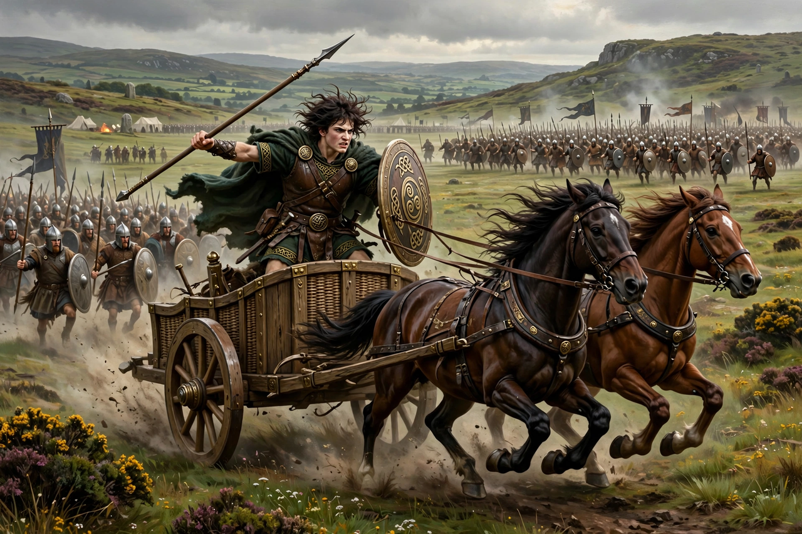

| Ulster Cycle | |
|---|---|
| Tradition | Irish (Celtic) mythology |
| Setting | Ulster, around the turn of the era (traditionally 1st century BC/AD) |
| Principal figures | Conchobar mac Nessa, Cú Chulainn, Medb, Ailill, Fergus mac Róich |
| Central tale | Táin Bó Cúailnge (The Cattle Raid of Cooley) |
| Manuscripts | Lebor na hUidre, Book of Leinster, Yellow Book of Lecan |

The Ulster Cycle (Irish: an Rúraíocht) is one of the four great cycles of Irish mythology: a body of medieval prose tales and poems concerning the heroes of the Ulaid, the people of the province of Ulster, and their court at Emain Macha (Navan Fort, near Armagh) under King Conchobar mac Nessa. Its central hero is Conchobar's nephew Cú Chulainn, and its central story is the Táin Bó Cúailnge, the Cattle Raid of Cooley.
The tales are set in a pre-Christian heroic age around the time of Christ — Conchobar is traditionally said to have died at the news of the Crucifixion — and depict a warrior aristocracy preoccupied with honour, cattle raiding, feasting, single combat at fords, and the obligations of fosterage and hospitality. They preserve a portrait, however stylised, of Iron Age Ireland: a land of kings, druids, satirists whose words wound, and women of formidable agency, above all Queen Medb of Connacht, whose ambition drives the Táin.
Some eighty tales belong to the cycle. They survive chiefly in the manuscripts Lebor na hUidre (c. 1100, the oldest surviving book written wholly in Irish), the Book of Leinster (c. 1160), and the Yellow Book of Lecan, though their language shows many were composed centuries earlier, in the 7th–9th centuries, from older oral tradition.